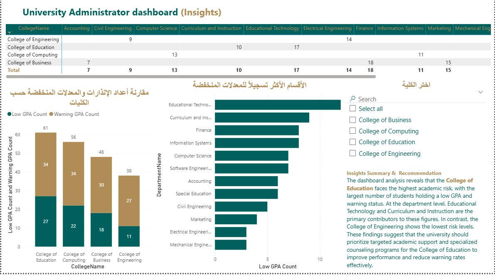
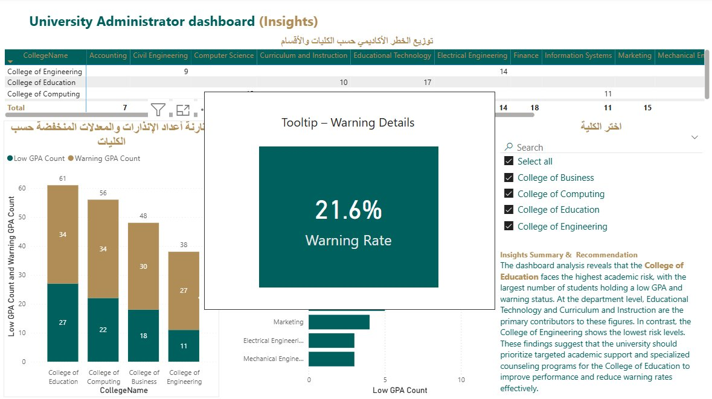
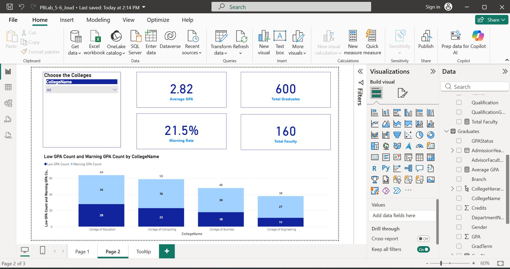
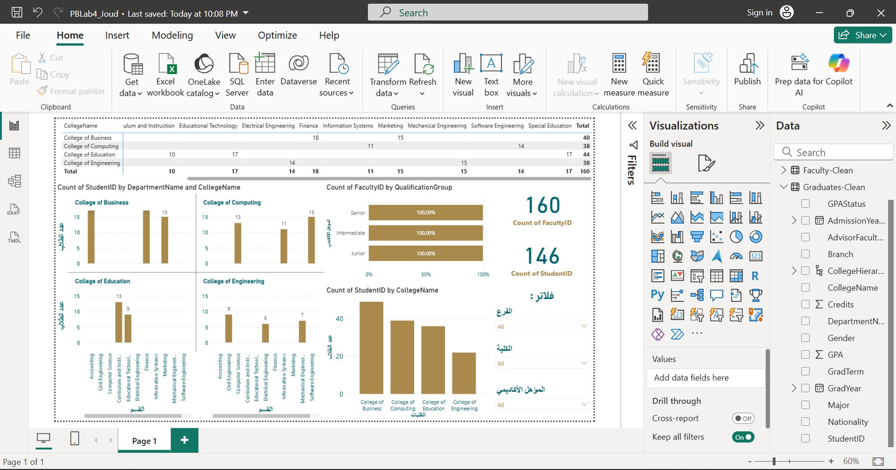

Overview
From raw records to one clear dashboard· نبذة
A university handed over thousands of raw graduate and faculty records — duplicated, inconsistent, and
hard to read. I cleaned them in Excel & Power Query, built a model with calculated
columns and DAX, then designed a single Power BI dashboard an administrator can filter
and act on.
The premise
The story starts in Excel: deduplicating rows, standardising text, and deriving the fields the
university actually needed — a Saudi / non-Saudi flag, a GPA status, a qualification group. Those
clean tables fed a Power BI model.
On top of that model I wrote DAX measures for the headline numbers and built three report pages —
an administrator overview, a risk breakdown, and a faculty view — all filterable by college, branch
and qualification, in Arabic and English.
★ Data cleaning → model → interactive dashboard
The shift
From scattered records to a single source of truth
The hard part wasn't charting — it was trusting the data underneath. Clean it once, model it well, and
the questions answer themselves.
The friction
The raw export was messy: duplicate students, inconsistent spelling of colleges and departments, no
reliable nationality flag, and no easy way to see which students were academically at risk. Numbers
existed — but no one could read them.
"The data was all there. It just couldn't answer a single question cleanly."
The promise
A cleaned, de-duplicated model with the right calculated fields, surfaced through one filterable
dashboard: pick a college, a branch, a qualification level — and instantly see GPA, warnings,
graduates and faculty for that slice.
"Clean the data once — then let the dashboard do the talking."
Objectives
What the dashboard had to do
01
Clean, reliable data
Remove duplicates, standardise college and department names, and derive the fields the report needs — before a single chart is drawn.
02
The metrics that matter
Define the headline measures with DAX — average GPA, total graduates, warning rate, total faculty — so every page speaks the same language.
03
Find the risk hotspots
Show, by college and department, where low GPAs and academic warnings concentrate — so support can be targeted, not guessed.
04
Let admins explore
Give administrators slicers for college, branch and qualification, plus a clear recommendation drawn straight from the data.
My role
What I did· دوري
I owned the whole pipeline — from the first messy spreadsheet to the final interactive report page.
🧹
Data cleaning
Deduplicated and standardised the raw records in Excel and Power Query until every row was trustworthy.
🔗
Data modeling
Shaped the cleaned tables into a model — graduates and faculty — ready for measures and visuals.
🧮
Calculated columns
Derived the fields the university needed: Saudi / non-Saudi, GPA status, and qualification group.
📐
DAX measures
Wrote the measures behind every KPI — average GPA, warning rate, graduate and faculty counts.
📊
Dashboard design
Laid out three bilingual report pages with KPIs, charts, a matrix and slicers that read clearly.
💡
Insights
Turned the visuals into a finding and a recommendation an administrator could actually act on.
Data preparation
Cleaning the data first
Before any visual, the records went through Excel and Power Query — because a dashboard
is only as honest as the table behind it.
DEDUPLICATE
One row per record
Removed duplicate students and faculty so counts and averages reflected reality, not repeats.
STANDARDISE
Consistent text
Unified college and department names and trimmed stray formatting so groupings actually grouped.
DERIVE
New calculated fields
Built Saudi / non-Saudi, GPA status, and qualification-group columns the raw export never had.
The cleaned model
What fed the dashboard
The cleaning above produced the tables and measures every report page is built on.
🧾
Graduates-Clean
De-duplicated student records · GPA · status
🧑🏫
Faculty-Clean
Faculty by college, department & qualification
🏷️
Calculated columns
Saudi / non-Saudi · GPA status · qualification group
🔢
DAX measures
Avg GPA · warning rate · graduate & faculty counts
Key metrics
The numbers that matter
Four DAX measures anchor the whole report — the first thing an administrator sees on the overview page.
Average GPA
Across all cleaned graduate records — out of 4.0.
Warning rate
Share of graduates flagged with an academic warning.
600
Total graduates
Unique graduate records after cleaning and de-duplication.
160
Total faculty
Faculty members across four colleges and three branches.
Process
How it came together
Six steps, in order — each one only as good as the step before it.
1
Collect
Gather the raw graduate and faculty exports from the university.
2
Clean
Dedupe and standardise in Excel & Power Query.
3
Model
Shape clean tables and relationships in Power BI.
4
Measure
Write DAX for GPA, warnings, graduate & faculty counts.
5
Visualise
Build bilingual KPIs, charts, a matrix and slicers.
6
Recommend
Read the findings into one clear recommendation.
Tools & methods
Excel
Power Query
DAX
Data modeling
Power BI
Slicers
Bilingual UI
Challenges
The hard parts· التحديات
01
Messy, inconsistent data
Duplicates and uneven spelling meant early totals were simply wrong. I leaned on Power Query to
clean and standardise everything first, so every number downstream could be trusted.
02
Choosing the right visual
Each question wanted a different chart — stacked bars for risk by college, horizontal bars for
departments, a matrix for faculty. I matched the visual to the question instead of decorating.
03
A bilingual dashboard
Labels and slicers had to read naturally in both Arabic and English without breaking the layout.
I kept the structure clean so RTL and LTR text could sit side by side.
04
From numbers to a decision
The point wasn't charts — it was a call to action. I pushed the analysis until it pointed at one
college and one clear recommendation an administrator could act on.
Visuals
The dashboard, view by view· الصور
Four real captures from the live report — the published dashboard, an interactive tooltip,
and the build pages inside Power BI Desktop.
app.powerbi.com › University Administrator dashboard — Insights

📊 Published dashboardInsights view · bilingual · slicer-driven
app.powerbi.com › Insights — custom tooltip page

💡 Interactive tooltipWarning-rate card on hover · drill detail
Power BI Desktop › PBLab_5-6 — Page 2 (build)

⚙️ Built in Power BI DesktopKPI cards · slicer · stacked risk
Power BI Desktop › PBLab4 — Page 1 (build)

🧩 Data model & breakdownMatrix · departments · qualifications
Findings
What the dashboard reveals
Once the data was clean, the picture was clear — and it pointed at one college in particular.
The College of Education carries the highest academic risk — the most low-GPA and warning students.
Highest risk · Education
Educational Technology and Curriculum & Instruction are the top department-level contributors.
Hotspot · departments
Engineering shows the lowest risk of the four colleges — the healthiest GPA and warning profile.
Lowest risk · Engineering
Across all graduates, 21.5% carry an academic warning — about one in five students.
Overall · warning rate
Recommendation: direct targeted academic support and counselling to the College of
Education — and specifically to Educational Technology and Curriculum & Instruction — where low GPAs
and warnings concentrate most.
Outcome
What this dashboard says, in one line
"البيانات النظيفة تتكلم — والقرار يصير أوضح."
A cleaned data model and one interactive Power BI dashboard that turn 600 raw records into a filterable, bilingual view of exactly where students need support.
Next project
Aman · أمان
→